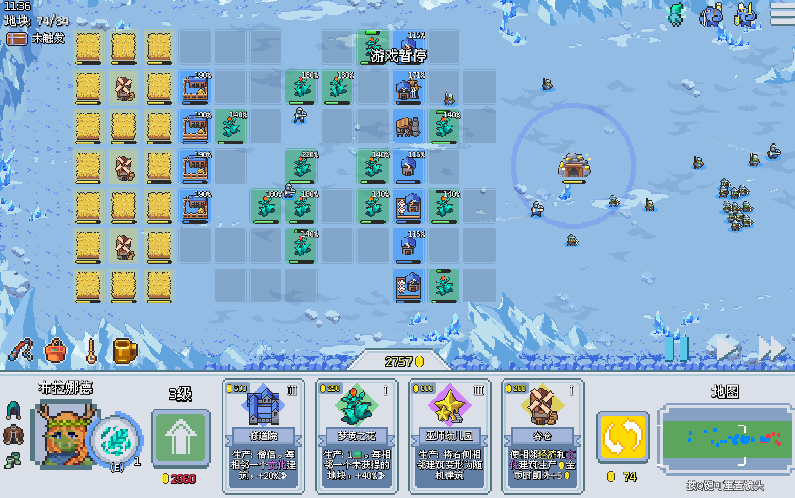
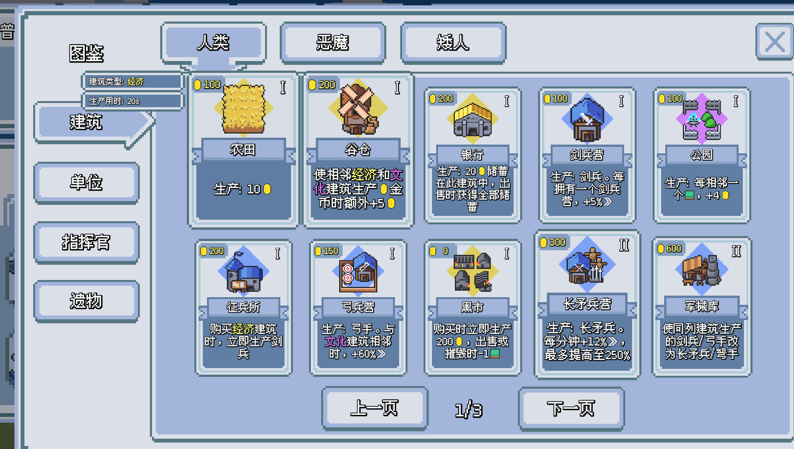
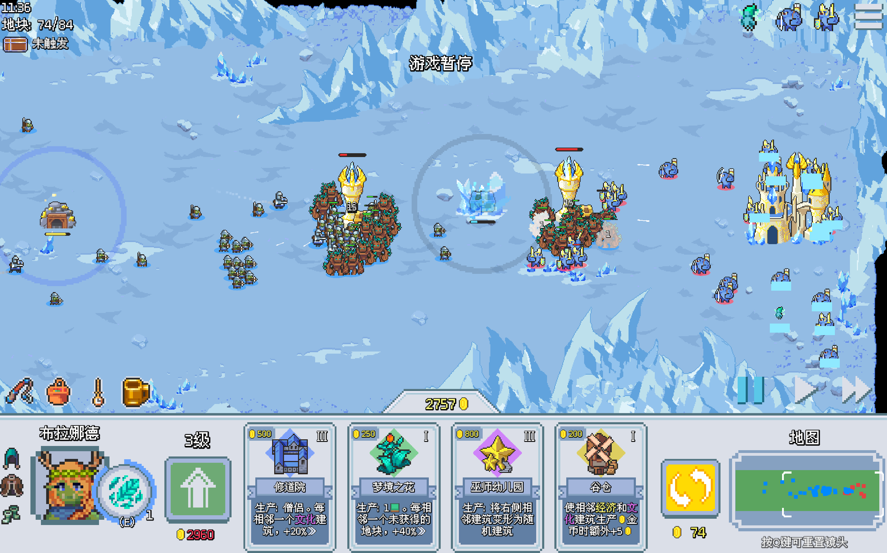
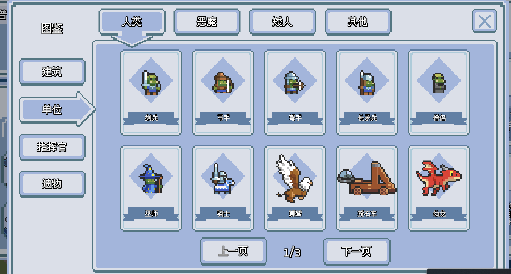
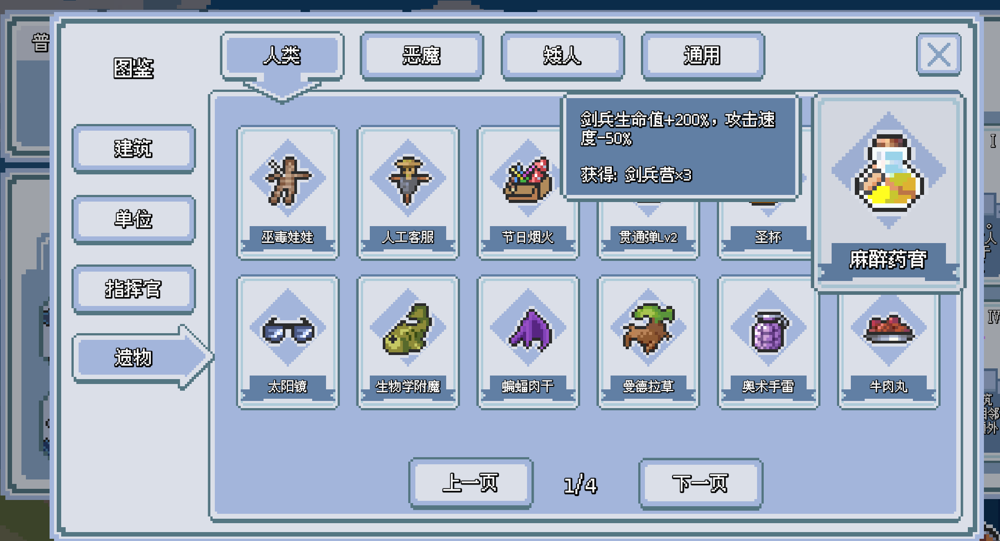
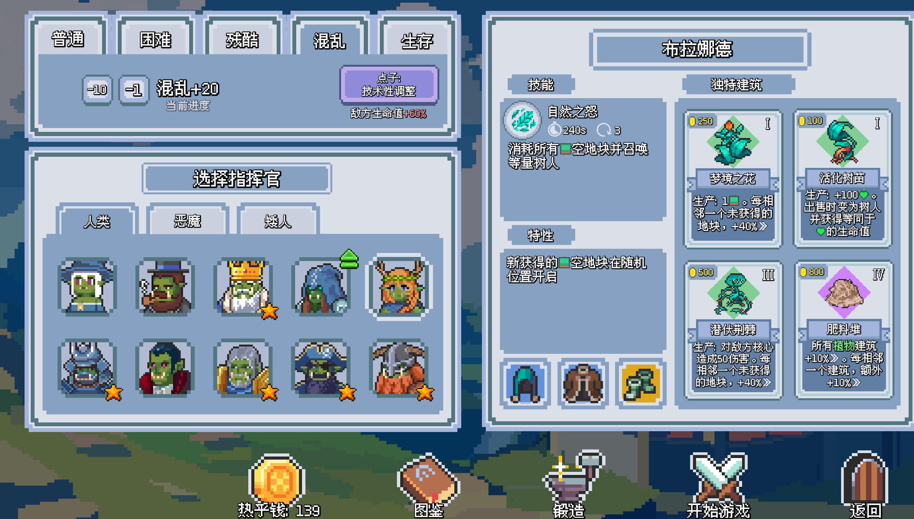
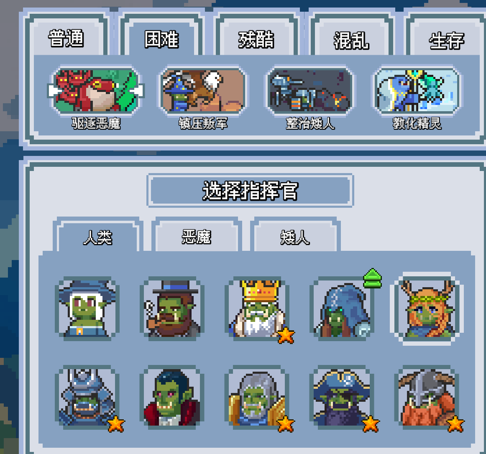
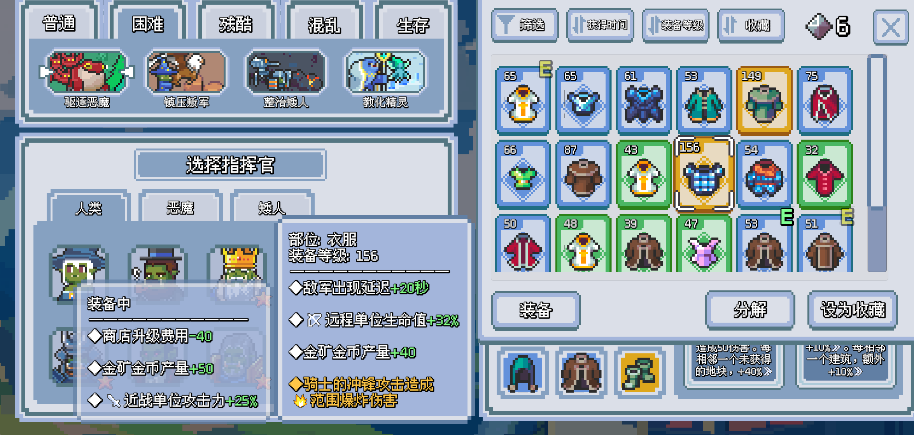

系统拆解 · 人类种族
这里没有兽人
《这里没有兽人》是一款融合建筑布局、抽卡构筑和大规模自动战斗的 Roguelike 策略游戏。玩家通过摆放建筑生产资源与部队，并利用建筑联动强化构筑、推进战线。本文针对游戏《这里没有兽人》的人类种族相关内容进行拆解分析。
0 核心玩法支柱
《这里没有兽人》的核心玩法可以概括为建筑布局、大规模战斗和抽卡构筑三个支柱。游戏将卡牌游戏的随机抽取与模拟经营游戏的空间规划进行了融合。虽然大部分卡牌游戏也存在基于位置的特殊效果，但通常只作用于有限的线性槽位，主要影响左右相邻单位、攻击顺序或局部增益。相比之下，本作最多拥有84个建筑地块，并通过横向、竖向、周边范围和建筑类型等条件建立联动，使位置成为整套构筑的核心。
大量建筑在地图上不断扩张，也让构筑过程获得了更加直观的视觉表达。玩家可以看到自己的基地从少量建筑逐渐发展为复杂的生产体系，从而获得较强的经营感和构筑成就感。建筑生产的部队会持续进入战场并形成大规模战斗，将原本抽象的生产速度、单位属性和布局收益转化为军队数量与战线位置的变化。玩家能够通过战场规模和推进情况直接感受到构筑强度。
0.1 建筑布局
建筑布局的核心不是把建筑放满地块，而是根据横向、竖向、周边一圈和特定建筑类型等条件组织生产链。玩家需要同时考虑建筑的位置、类型、生产速度和作用对象，让经济、出兵与增益建筑互相服务。该支柱提供了游戏最主要的思考空间：同一批建筑因为摆放不同可以形成完全不同的效率，获得新建筑后也需要重新调整既有结构。
它的问题在于部分强力兵种遗物能够绕过复杂布局，当单一建筑堆叠的收益高于联动时，核心支柱就会被削弱。
0.2 大规模战斗
大规模战斗把建筑持续生产的单位投放到同一条战线上，通过大量单位对撞、占领中立建筑、摧毁防御塔和攻击核心，为玩家提供清晰的目标与视觉反馈。玩家主要在战斗外完成决策，再观察构筑是否能够转化为推进能力，因此战斗不会夺走建筑布局所需要的注意力。
当前兵种克制和针对性调整并不明显，玩家通常可以忽略敌方变化并持续发展自己的体系。这有利于突出建筑布局，却使“斗蛐蛐”更接近结果展示，降低了观察敌方阵容、调整兵种和期待战局反转的策略深度。
0.3 抽卡构筑
抽卡构筑通过随机建筑商店、商店升级和三选一遗物持续为玩家提供不完整的组件，要求玩家在接受当前收益、刷新寻找关键卡和转向其他构筑之间选择。它为建筑布局制造每局不同的题目，也让战场推进获得的遗物能够改变后续发展方向。
抽卡支柱成立的前提是多数选项都能与现有布局发生关系,但是游戏存在刷新成本过低、专项遗物过强的问题。玩家会从“根据抽到的内容调整”变成“不断刷新直到抽到固定答案”，随机性只剩下完成预设构筑的阻力。
结构总览
- 建筑布局
- 建筑分类
- 建筑联动
- 建筑生产
- 大规模战斗
- 出兵
- 战场推进
- 自动战斗
- 抽卡构筑
- 建筑商店
- 遗物抽取
- 指挥官
- 建筑
- 特殊效果
- 技能
- 兵种
- 近战
- 远程
- 空军
- 建筑
- 出兵建筑
- 生产金币建筑
- 增益建筑
建筑分类：出兵建筑、生产金币建筑、增益建筑
建筑联动：横向、竖向、周边一圈、特定建筑类型、建筑类型与数量
建筑生产系统
战斗反馈、兵种克制、出兵系统、胜利目标、战斗循环、自动战斗
战场建筑：中立建筑、敌方防御塔
建筑商店：建筑抽卡购买、等级提升
遗物抽取：即时效果、商店相关、建筑生产、战场、通用战斗、兵种专项强化
建筑、特殊效果、技能
内容解锁、构筑扩展与长期成长
运营发展、通用战斗强化、兵种专项构筑
普通、困难、残酷、混乱
- 构筑与战斗的注意力冲突
- 基地构筑占用视野
- 前线战斗缺少持续反馈
- 解决方案
- 降低后期构筑操作压力
- 增强战场信息反馈
2 玩法系统
2.1 局内
2.1.1 建筑布局
建筑布局是玩家最主要的主动决策层，承担金币生产、单位生产、属性成长、地块扩张和效果转换等功能。建筑会随时间自动生产，玩家可以拖动建筑重新调整位置，也可以将建筑出售，为新的组合腾出空间。建筑之间大量使用邻接、行列、类型和触发关系产生额外效果。布局最终决定抽卡获得的组件能否形成有效生产链，也是大规模战斗能够持续获得兵力的基础，因此是三个玩法支柱中连接构筑输入与战斗输出的核心。

2.1.1.1 建筑分类
人类目前拥有26座可购买通用建筑，按照建筑的主要作用重新分为出兵建筑、生产金币建筑和增益建筑三类。出兵建筑负责直接补充军队，生产金币建筑负责提供商店运营所需的资源，增益建筑则负责强化、转换、扩张和改变其他内容。大部分建筑同时具有多重作用，所以这只是一个粗略的分类。
2.1.1.1.1 出兵建筑
这一类建筑能够通过周期生产或特定操作直接产生单位，是玩家建立军队规模和兵种结构的主要来源。其中十座建筑按照各自的生产周期持续出兵，征兵所和雇佣兵营则把建筑购买、出售等经营操作转化为即时兵力。不同出兵建筑仍然会受到邻接、同行和特定建筑对象数量等条件影响，因此统一归入出兵类并不意味着它们的构筑方式相同。玩家需要根据当前敌人、遗物和装备决定主要兵种，同时保留足够的前排、远程、辅助单位。
2.1.1.1.2 生产金币建筑
这一类建筑的主要结果是直接增加玩家持有的金币，是购买建筑、刷新商店和提升等级的经济基础。它们既包含按照生产周期稳定产钱的农田，也包含储蓄结算、布局增产、购买触发和消耗地块换钱等不同方式。，玩家需要在投入经济和补充军队之间保持平衡，避免为了长期收入导致短期兵力不足。
2.1.1.1.3 增益建筑
这一类建筑不会独立产生有效金币或直接补充单位，而是通过追加收益、生产加速、地块扩张、永久成长和建筑变化强化整套构筑。增益建筑通常需要其他建筑作为作用目标，单独放置时收益有限，但合理布局后可以同时影响多座建筑。这类建筑最能体现人类的建筑连携特点，也是玩家需要反复调整位置的主要对象。
2.1.1.2 建筑联动系统
建筑联动系统是建筑布局支柱最直接的规则载体，通过位置、类型、数量和操作行为把多座建筑连接成一个整体。联动效果大多表现为提高生产速度、追加金币、转换兵种或触发即时生产，因此同一批建筑采用不同布局时可能形成完全不同的产出结果。联动机制提高了建筑选择和摆放的策略性，但也使构筑更加依赖关键位置与核心建筑。玩家需要在购买建筑时同时考虑单卡强度、现有组合和剩余空间，而不是只选择当前等级最高的建筑。
2.1.1.2.1 邻接关系联动
建筑要求的联动类型一般会从下方的横向、竖向、周边一圈和特定建筑类型中选取一个或几个，共同组成建筑自身的联动特性。这四项不是互相排斥的分类，而是可以叠加使用的条件。例如龙巢的联动由“横向”和“经济建筑类型”组成，军械库主要使用“竖向”条件，谷仓则同时使用“周边一圈”和“经济、文化建筑类型”。因此判断一座建筑应该如何摆放时，需要先确认它读取的空间范围，再确认这个范围内哪些建筑能够满足目标要求。
2.1.1.2.1-A 横向
横向联动会读取建筑所在横排，或者只读取自身左侧、右侧的指定位置。横向联动既可能是整排统计，也可能带有明确的左右顺序，玩家需要根据卡牌文本判断具体范围。整排效果适合提前规划一条主要服务经济、文化或出兵的建筑带，定向效果则要求建筑严格按照顺序排列。
2.1.1.2.1-B 竖向
竖向联动会读取建筑所在竖排，目前人类建筑主要使用“同列”作为判断条件。竖向联动能够跨越多个地块产生效果，但会固定整列建筑的用途，如果后续关键建筑无法加入这一列，玩家就需要重新调整现有布局。
2.1.1.2.1-C 周边一圈
周边一圈联动会读取建筑紧邻的一圈地块，是人类建筑中使用数量最多的空间条件。弓兵营、马厩、修道院、纪念碑、几何研究所和搏击俱乐部会根据周边符合条件的建筑提高自身生产速度；由于一座建筑可以同时接触周边多个目标，核心增益建筑通常适合放在布局内部，但多个核心建筑会争夺相同的中心位置，玩家很难让所有周边效果同时达到最高收益。
2.1.1.2.1-D 特定建筑类型
特定建筑类型用于限制联动能够识别的目标，它既可以指经济、军事、文化和植物等建筑类型，也可以指空地块这种特殊建筑对象，还可以指某一座具体建筑或一组指定建筑。需要注意，这里的经济、军事和文化属于游戏内的建筑标签，并不等同于前文“出兵、生产金币、增益”的功能分类。这类条件通常会与横向、竖向或周边一圈共同出现，使建筑不仅要求位置正确，还要求目标本身属于正确的类型或具体建筑。
2.1.1.2.2 建筑类型与数量联动
这一类联动与上文需要判断空间范围的“特定建筑类型”不同，它不依赖具体摆放位置，而是根据玩家全局拥有的建筑类型、同名建筑数量或其他资源总量提供加成。同类数量效果鼓励集中购买一种建筑，类型多样性效果则鼓励保留更多不同建筑，玩家需要在专精单一体系和维持多样化构筑之间进行选择。
2.1.1.3 建筑生产系统
建筑生产系统负责把静态布局转化为持续收益，也是建筑布局连接大规模战斗的出口。大部分建筑会按照各自的生产周期自动产生金币、单位、地块或永久属性，生产速度则受到建筑基础数值、布局联动、遗物和特殊建筑影响。玩家不需要逐次操作建筑，但需要通过摆放和构筑决定每次生产的最终收益。生产系统把经营和战斗连接在同一条时间轴上，生产金币建筑提供资源后可以继续购买建筑，出兵建筑生产单位后会直接影响战线，增益建筑则通过强化、转换或多次循环积累长期优势。由于生产需要时间，玩家在建筑刚买下时通常无法立刻获得全部价值，也需要承担构筑成型前战线暂时变弱的风险。
2.1.2 大规模战斗
大规模战斗是建筑构筑的结果展示与反馈层。建筑持续生产的单位会自动进入同一战场、寻找敌人并向敌方核心推进，单位数量不断累积，形成直观的大规模对撞和战线变化。玩家无法直接控制单个单位，主要通过建筑布局、出兵比例、遗物和指挥官技能间接影响战局；推进战线又会带来中立建筑、金币和遗物等奖励，反过来推动下一轮抽卡与布局。这个支柱提供了明确的目标和视觉反馈，但由于兵种克制与临场调整较弱，目前更像构筑结果的展示器，而不是一套同样深入的独立策略系统。


2.1.2.1 战斗反馈
战斗反馈主要通过战线位置体现。随着军队不断向前推进，玩家可以占领沿途的中立建筑，并获得遗物等奖励，使战斗中的推进优势继续转化为构筑成长。
2.1.2.2 兵种克制
游戏虽然设置了护甲、破甲、飞行和对空等兵种克制关系，但这些关系在实际对局中的影响并不明显。玩家通常不需要根据敌方兵种的变化调整自己的出兵结构，只要持续发展经济、完善建筑联动并提高整体数值，就能够维持战线。这种设计降低了战斗侧的信息负担，让玩家可以埋头发展并把注意力集中在建筑选择和布局上，符合游戏以建筑布局为核心的玩法支柱；但与此同时，自动战斗缺少观察敌方阵容并进行针对性调整的过程，不利于大规模战斗中“斗蛐蛐”部分的策略深度和观赏性。
2.1.2.3 出兵系统
出兵系统负责把建筑布局的生产效率转化为战场上的单位规模，是建筑布局支柱与大规模战斗支柱之间最直接的连接。出兵主要由军事建筑按照生产周期自动完成，单位生成后会进入战场并自动向敌方方向移动。不同兵种在生命值、护甲、攻击距离、攻击速度和特殊能力上存在差异，玩家通过搭配多种出兵建筑形成前排、后排等基本结构。因为玩家不能手动控制单位集火或撤退，出兵的数量、节奏和比例比单个单位操作更加重要。
2.1.2.4 战场建筑
战场建筑把大规模战斗与抽卡构筑连接起来，包括可以被双方争夺的中立设施、阻挡推进的敌方防御塔以及最终需要摧毁的敌方核心。它们把较长的战线划分为多个阶段，使玩家在尚未接触核心前就能获得中间目标和阶段奖励。战场建筑也让军队推进产生经营价值，占领设施可以持续提供资源，摧毁防御塔可以获得遗物。玩家因此不能只关注最终胜利，还需要利用每次推进带来的资源继续扩大构筑优势。
2.1.2.4.1 中立建筑
中立设施需要通过战线推进进行占领，并在我方控制期间提供额外收益。当前设施包括持续生产金币的金矿、生产空地块的滋养之泉、提供同种族其他指挥官建筑的贸易站、一次性唤醒黑曜石巨龙参战的设施，以及持续生产遗物的冰封财宝。不同设施分别强化经济、扩张、建筑获取和战斗能力，使地图控制成为构筑的一部分。其收益通常需要持续占领才能积累，如果战线被敌人推回，玩家也会失去对应资源，因此中立设施同时承担了奖励优势方和制造争夺目标的作用。
2.1.2.4.2 敌方防御塔
敌方防御塔是战线推进中的阶段性障碍，会攻击接近的我方单位并保护后方区域。摧毁一座防御塔后，玩家可以进行一次遗物选择，使战斗推进直接转化为构筑成长。防御塔因此既是需要针对的战斗目标，也是局内奖励节点，玩家越早突破便越早获得遗物带来的长期收益。不过为了强行拆塔而过度投入即时兵力，也可能导致经济和建筑等级落后，需要在推进速度与持续发展之间保持平衡。
2.1.2.5 胜利目标
常规对局的最终目标是摧毁敌方核心。玩家需要先让军队突破沿途敌人和防御塔，再持续对核心造成伤害。部分遗物、指挥官技能和特殊建筑能够直接削弱防御塔或攻击核心，为常规出兵以外提供其他获胜方式，但大多数构筑仍然需要维持足够的战线强度才能接近目标。明确的单一胜利目标使玩家容易判断战局进度，同时也允许游戏通过偷塔、直接伤害和快速推进等机制形成不同取胜路线。
2.1.2.6 战斗循环
三个玩法支柱共同形成“抽取建筑与遗物—调整建筑布局—生产金币与单位—展开大规模战斗—占领设施或摧毁防御塔—获得新的抽取资源”的循环。玩家每次推进都会得到新的成长机会，而新的建筑和遗物又会提高下一阶段的推进能力。如果战线停滞，玩家需要回到经济、兵种克制和布局中寻找问题；如果推进顺利，则可以把优势投入商店升级和长期成长。这种循环让经营结果能够快速在战场上得到验证，也让战斗成果继续服务于后续经营。
2.1.2.7 自动战斗
单位进入战场后会自动移动、选择目标并进行攻击，玩家不需要也无法对单个单位下达详细指令。玩家的控制主要发生在战斗之前和战斗过程中更高层级的决策上，包括生产哪些兵种、如何摆放建筑、何时升级商店以及何时释放指挥官技能。自动战斗降低了单位操作负担，使注意力能够集中在建筑构筑上，但也减少了通过即时操作弥补阵容缺陷的空间。一旦建筑组合或兵种比例出现问题，玩家通常只能等待新的生产周期逐步修正，构筑决策因此具有更明显的后果。
2.1.3 抽卡构筑
抽卡构筑决定玩家每局能够获得哪些建筑和遗物，是另外两个支柱的内容入口。建筑商店提供基础组件，遗物抽取提供规则强化，玩家通过金币、刷新和商店等级控制随机性的幅度。理想状态下，抽卡应当不断提出新的布局问题，并让玩家根据已有建筑灵活转向；当固定答案过强时，抽卡就只剩下寻找指定组件的过程。

2.1.3.1 建筑商店
建筑商店是抽卡构筑支柱的主要入口，负责把建筑生产获得的金币转化为新的建筑组件、更多地块和更高等级的卡池。金币可以用于购买建筑、主动刷新商店和提升商店等级，因此玩家需要在接受当前选项、寻找关键组件和投资长期成长之间分配资源。随机商店迫使玩家根据已有组件临时调整布局，而刷新价格随操作变化的机制限制了无限寻找目标建筑，使等待、购买和放弃都成为抽卡决策。这个系统只有在不同建筑都能进入布局并产生价值时才能维持变化；如果关键遗物或装备让玩家只追逐少数固定建筑，抽卡就会退化为重复刷新。
2.1.3.1.1 建筑抽卡购买
商店会随机提供一定数量的建筑，玩家消耗金币购买后，可以将建筑放置在已有地块上。每次购买都会自动刷新商店，玩家也可以主动付费刷新；主动刷新的费用会随时间逐渐降低，使用后重新计算。这个机制使购买建筑不仅意味着获得一张卡，也会放弃当前商店中的其他选项并生成下一轮选择。玩家需要判断是立即购买能够产生短期收益的建筑，还是等待刷新价格下降并寻找更符合目标构筑的建筑，商店类遗物和装备词条则会进一步改变这种取舍。
2.1.3.1.2 等级提升
商店等级决定能够出现的建筑品质，提升等级会解锁更高等级建筑，同时获得7个空地块和一次遗物选择。升级需要投入金币和时间，因此它既是构筑成长节点，也是局内节奏的重要分界。过早升级可能导致当前兵力和经济不足，过晚升级则会限制建筑强度、地块数量和遗物获取。由于高等级建筑并不一定能够直接融入已有布局，玩家仍然需要根据当前构筑判断升级时机，而不是单纯追求尽快升到最高等级。
2.1.3.2 遗物抽取
遗物抽取是抽卡构筑支柱的第二条随机输入。玩家每摧毁一座敌方防御塔就会获得一次三选一遗物的机会，也可以消耗金币刷新，且刷新费用会随使用次数增长。遗物会强化商店、建筑生产和军队，因此一次选择可能同时改变后续抽卡目标、布局方式和战斗表现。三选一让战场推进产生新的构筑分支，但部分兵种专项遗物强度过高时，玩家会放弃多建筑联动而集中寻找单一出兵建筑，反而削弱建筑布局支柱。
遗物总共可以分为下列六类，分类统计包括人类特有遗物和通用遗物。
2.1.3.2.1 即时效果型遗物
这一类遗物会提供一个立即生效的效果，是最为简单的一类遗物，通常表现为直接获得一定数量的金币，或者消灭场上的敌人并将其转化为金币。它们在游戏前期缺少资金时具有一定作用，但对长期构筑没有明显增益，也难以加入复杂玩法的构建。玩家通常很难仅凭一笔临时金币或一次全场清除改变整局走势，因此这是一类用于提供基础收益的遗物。
2.1.3.2.2 商店相关遗物
这一类遗物主要改变商店刷新、建筑购买、出售以及额外获取建筑的规则，例如降低建筑价格、复制下一次获得的建筑，或者让购买和出售建筑时的效果重复触发。相比即时效果型遗物，这类遗物能够在整局游戏中持续产生影响，使玩家更容易获得需要的建筑并完成目标构筑。部分遗物之间还能形成连携，让玩家围绕建筑购买、出售和复制建立一套完整的运营方式，是影响玩家长期构筑的重要遗物类型。
2.1.3.2.3 建筑生产类遗物
这一类遗物主要强化建筑的生产效率、邻接效果与类型关系。部分遗物会直接提高特定建筑的生产速度或强化其原有效果，另一些遗物则会改变建筑的类型，使其能够同时触发军事、经济和文化建筑的联动效果。这类遗物可以进一步放大建筑布局带来的收益，让玩家根据已有遗物重新调整建筑位置和发展方向，大幅增加游戏核心玩法建筑布局带来的收益。
2.1.3.2.4 战场类遗物
这一类遗物主要围绕中立设施、敌方防御塔和核心产生效果，将基地建设与战场推进联系起来。部分遗物可以让空地块持续产出金币，或者在获得和失去地块时消灭敌人；另一些遗物则会削弱敌方防御塔、延迟敌军进攻，或者将多余地块转化为对敌方核心的伤害。这类遗物需要满足一定的战场条件，稳定性不如直接强化类遗物，但可以组成绕过正面战线、直接攻击防御塔和核心的特殊流派。它拓宽了大规模战斗支柱的取胜方式，使正面暴兵以外的偷塔构筑成为可能。
2.1.3.2.5 通用战斗遗物
这一类遗物主要对我方全部军队提供增益，包括缩短技能冷却、恢复单位生命值、提高近战单位护甲以及强化远程单位攻击力等。其效果一般不限制具体兵种，因此适用范围较广，可以直接提高当前军队的整体战斗能力。部分遗物也会附带较为明显的负面效果，要求玩家在生存能力、输出能力和建筑生产之间进行取舍。这类遗物通常不会单独形成复杂的构筑，但可以补足现有阵容的短板，使军队的战斗表现更加稳定。
2.1.3.2.6 兵种专项强化
这一类遗物会对剑兵、弓手、长矛兵、弩手和骑士等特定兵种进行强化，通过增加属性或改变攻击方式，使兵种获得新的战斗能力。玩家需要根据已经获得的遗物选择对应的出兵建筑，并逐渐减少与核心兵种无关的建筑。这类遗物对阵容的限制较强，但一旦形成完整组合，往往能够成为整局游戏的主要构筑方向。不过这类遗物通常只服务单个兵种，而游戏的多建筑联动往往会同时影响多个单位；当专项强化的收益过高时，玩家会反复抽取核心兵种的生产建筑，不再考虑复杂布局。这虽然为抽卡提供了明确目标，却会同时压缩建筑布局的组合空间，并让大规模战斗更依赖数值堆叠，与三个支柱之间相互促进的设计目标存在冲突。
2.1.4 指挥官
指挥官由专属建筑、特殊效果和技能三个部分组成，三者围绕同一个玩法主题紧密配合。特殊效果提供基础规则，专属建筑把规则转化为可以抽取和布局的构筑内容，技能则提供主动触发或临场干预。三个部分共同决定一名指挥官的局内玩法。

2.1.4.1 建筑
每名指挥官通常会向建筑池中加入四座专属建筑。这些建筑围绕指挥官的主题提供资源、出兵、建筑联动或技能强化，使指挥官机制能够进入抽卡与建筑布局过程。
2.1.4.2 特殊效果
特殊效果是指挥官进入对局后持续生效的规则改变，决定其基本优势、限制和发展方向，也会影响专属建筑与技能应该如何使用。
2.1.4.3 技能
技能是指挥官独有的主动操作手段，可以影响运营或直接干预战场。技能通常会与特殊效果和专属建筑形成配合，为自动生产与自动战斗补充少量即时决策。
2.2 局外
局外系统负责提供长期成长、内容解锁和重复挑战目标。玩家可以选择不同指挥官改变下一局的技能与特殊建筑，也可以通过通关获得装备，为后续对局提供初始资源、属性或遗物效果。更高难度会提高敌人强度和规则复杂度，同时提供更高等级装备，使局内挑战与局外成长形成循环。局外增益能够降低重复开局的压力，但装备数值积累也可能削弱局内随机构筑的重要性，因此需要通过难度层级维持挑战。
2.2.1 指挥官
局外的指挥官系统主要承担内容解锁和长期成长功能。玩家随着游戏进程解锁新的指挥官，也会同时获得新的角色立绘、特殊效果、专属建筑和技能，相当于解锁一套完整的局内玩法。不同指挥官围使玩家可以用新的规则重新体验同一种族。指挥官解锁因此能够持续扩大可选择的构筑方向，为玩家提供明确的长期目标，并通过内容变化维持重复游玩的动力。

2.2.2 装备
装备属于局外长期成长系统，分为头部、衣服和鞋子三个部位，可以提供数值词条或人类兵种专属的遗物效果。玩家可以分解多余装备获得碎片，并使用15个碎片锻造一件遗物装备；相同遗物效果的装备不能重复生效，但局内获得的同名遗物可以与装备效果叠加。装备属性范围会参考已经完成的最高难度，使高难度挑战稳定转化为局外成长。按照装备对一局构筑的主要影响，可以将现有词条概括为运营发展、通用战斗强化和兵种专项构筑三类。

2.2.2.1 运营发展型装备
这一类装备改善玩家获取和组织构筑资源的效率，包括增加初始金币与地块、降低商店和遗物刷新成本、减少商店升级费用、延迟第一波敌军以及提高金矿产量。它们不会直接决定最终兵种，而是为抽卡和建筑布局提供更多时间、空间与选择机会，能够提高不同指挥官和构筑的开局稳定性。不过这类装备也会降低随机结果带来的压力，当刷新与升级成本被压得过低时，玩家会更容易强行寻找预定组件，从而削弱抽卡支柱要求玩家根据当前选项进行调整的意义。
2.2.2.2 通用战斗强化型装备
这一类装备提高所有近战或远程单位的攻击力与生命值，不限制具体兵种，因此能够稳定增强整支军队的输出和生存能力。它们对建筑布局和抽卡方向的限制较少，几乎任何包含对应单位的构筑都能获得收益，主要作用是降低大规模战斗的数值压力。但是这类装备只提供基础属性，不会产生新的建筑关系或单位机制；数值积累过高时，还可能进一步掩盖兵种克制，使玩家更加不需要根据敌方阵容调整出兵结构。
2.2.2.3 兵种专项构筑型装备
这一类装备会对剑兵、弓手、长矛兵、弩手、骑士、僧侣、狮鹫、巫师、幼龙和投石机等具体兵种提供专属效果，包括穿透、额外箭矢、攻击范围扩大、吸血、破甲、永久成长以及改变攻击方式。它们能够在进入对局前确定明确的兵种方向，使玩家围绕对应出兵建筑和遗物快速形成流派，也能让大规模战斗呈现更明显的单位特色。但这种预先确定的目标会引导玩家反复刷新并堆叠少数出兵建筑，减少根据随机结果调整构筑的必要，也可能让专项数值压过多建筑联动，因此是装备系统中对三个玩法支柱影响最明显的一类。
2.2.3 难度
游戏目前包含普通、困难、残酷和混乱四个主要难度层级。普通难度用于熟悉建筑、商店和战斗循环，困难与残酷逐步提高战斗压力，其中残酷难度会显著增加敌方单位数量，并在获胜后掉落两件装备。混乱难度采用随机敌方单位组合，每一层加入一个独特的点子效果，敌方生命值还会随层级持续提高；获胜同样掉落两件装备，并有概率获得遗物装备。难度系统不仅提高数值，也逐渐加入规则变化和随机条件。它能够提高大规模战斗的场面压力，并要求抽卡与布局拥有更高的成长效率；但在兵种克制不明显的前提下，敌方组合变化仍然较难转化为针对性的兵种调整，高难度更多是在检验玩家能否把既有构筑做得更强。
3 核心冲突与解决思路
3.1 构筑与战斗的注意力冲突
游戏目前最明显的核心冲突来自建筑构筑与大规模战斗对玩家视野和注意力的争夺。建筑数量较多，商店购买、建筑摆放和联动调整都需要玩家持续观察基地；与此同时，大量单位会在战场上自动交战，但基地与前线难以在同一视野中得到清晰展示。玩家专注构筑时往往看不到部队具体如何作战，切换到战场观看又会暂时中断对商店和建筑的管理，因此很难同时获得经营构筑和观看大规模战斗的完整体验。
尤其是在游戏后期因为战前的前进，玩家只能选择一方进行观看，金钱在这时候也会严重膨胀，导致玩家在建造上可以一直进行刷新和规划。对于一款进行了简化的轻度策略游戏而言，游戏后期会出现玩家手忙脚乱和核心支柱冲突的情况。这是该游戏下一阶段所需要着重解决的一个问题。
这一问题会直接削弱两个核心支柱之间的联系。建筑布局产生的结果本应通过单位规模、战斗过程和战线推进给予玩家直观反馈，但受视野限制，玩家通常只能通过战线位置或胜负结果判断构筑强度，难以观察具体兵种和增益如何发挥作用。大规模战斗因此容易退化为后台运行的结果展示，而不是能够被持续观看和理解的视觉体验。如何让玩家在进行构筑时仍然感知战场变化，是游戏需要解决的核心表现问题。
3.2 解决方案
3.2.1 降低后期的构筑操作压力
初步设想可以分为两方面，游戏需要解决游戏后期经济膨胀的问题，虽然高级建筑物会卖出更高的价钱，但是刷新的价格一直不变，100元一次的刷新对后期的玩家来说太廉价了。实际上游戏本来就有刷新花费随着时间减少的设计，如果一段时间不使用刷新，那么刷新的价格会降低到0.那么完全可以考虑让刷新的花费随着使用而增加，而不是刷新最多消耗100元。这样玩家在后期也不会因为经济膨胀而导致需要更多的经历放在建造上。
但是该解决方案需要考量玩家可能因为增加的刷新花费而导致难以找到核心卡而使之前的努力付之东流，在具体的设计时需要考虑刷新花销的数值，必要的时候可以根据玩家刷新的使用来增加核心卡牌的权重。
3.2.2 增强战场信息反馈
对于战斗侧应该考量使用额外的辅助手段让玩家获得前线战斗反馈，其形式可以是多样的，例如语音播报，战线缩略图或者一个反应前线的小型视窗，或者直接采用分屏左侧显示建造槽位，右侧直接反映一线战况。